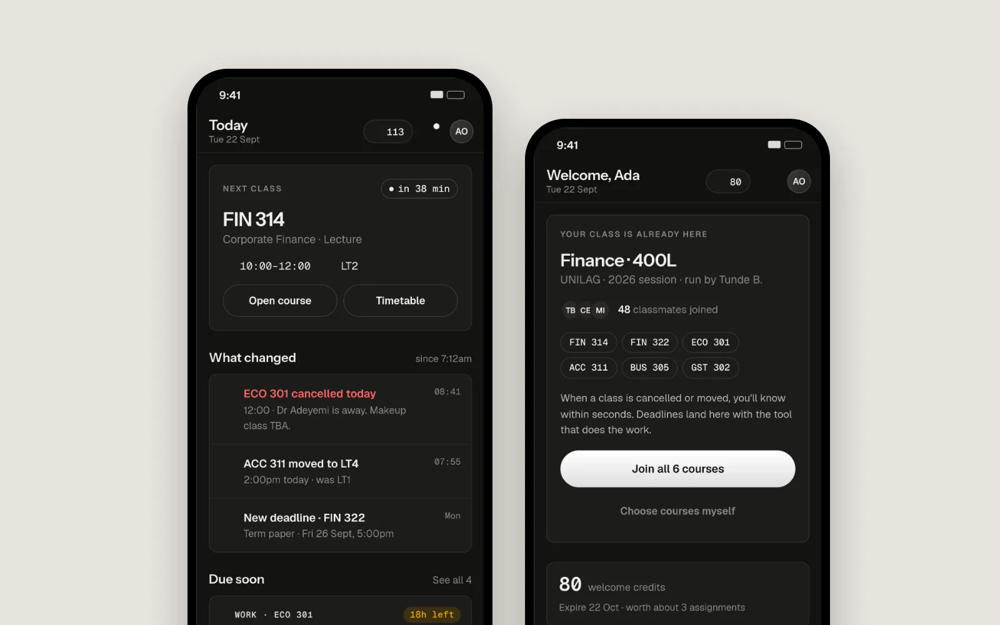
One useful home
A focused dashboard for upcoming classes, important updates and the information a student is most likely to need next.
A campus productivity platform concept designed to bring students' schedules, classes, assignments, tests, materials and important updates into one focused experience.

WadeScribe is designed around a simple problem: important academic information is often scattered across chats, class announcements, personal notes and different tools. The product brings the most useful student workflows into one place without trying to replace every tool a student already uses.
The MVP focuses on the everyday academic loop — knowing what is happening next, finding course information, keeping up with assignments and tests, accessing materials, and receiving the right notification at the right time.
The experience is designed around reducing the friction of finding academic information. Instead of making every feature compete for attention, WadeScribe prioritizes the next useful action and separates normal updates from genuinely important ones.

A focused dashboard for upcoming classes, important updates and the information a student is most likely to need next.
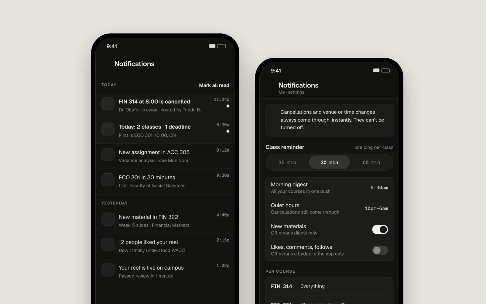
Important updates can take over the Home priority slot until they are acknowledged, while the full Updates feed keeps the complete history.
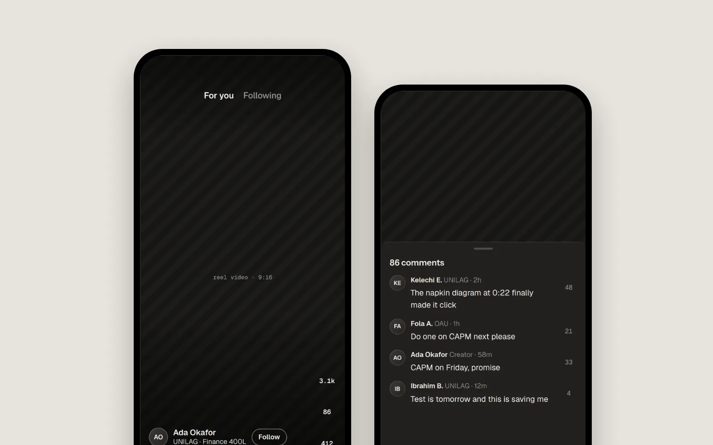
A short-form discovery space for student-created content, campus moments, events, tips and community content, kept separate from official academic updates.
Reels gives WadeScribe a social layer where students can discover and share short-form campus content. It is designed for engagement and discovery rather than replacing the product's academic communication system.
Updates remains the source for official academic information, announcements and priority notifications. Reels is for discovery, entertainment and community content.
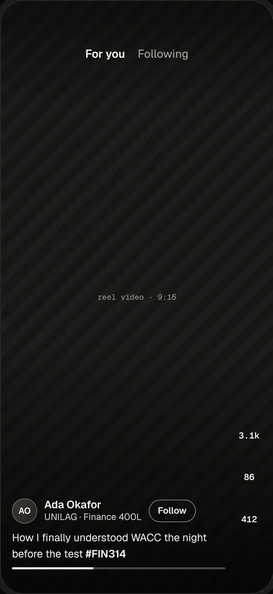
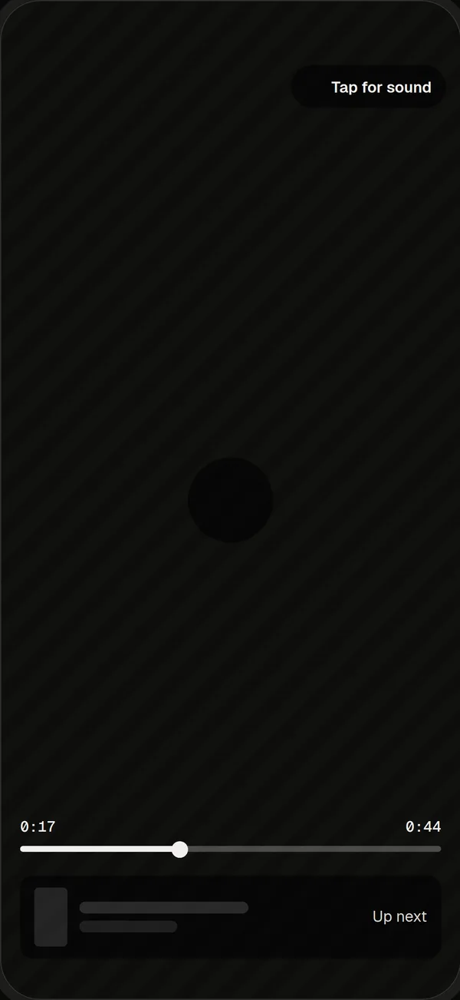
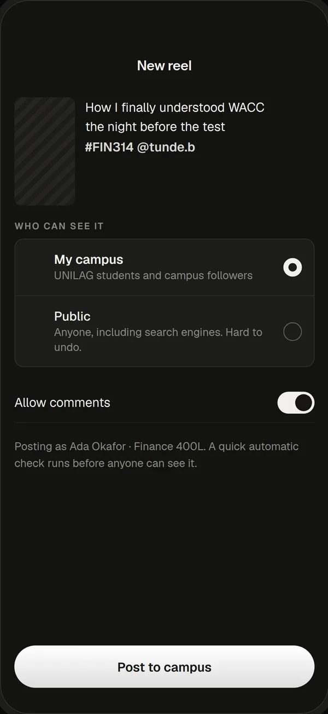
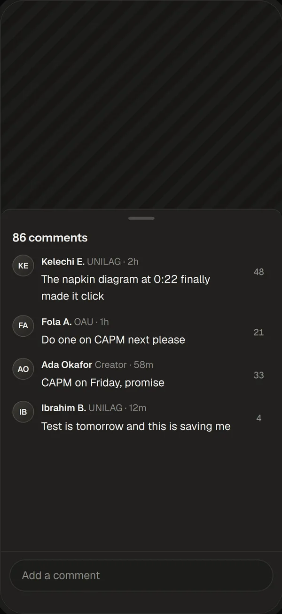
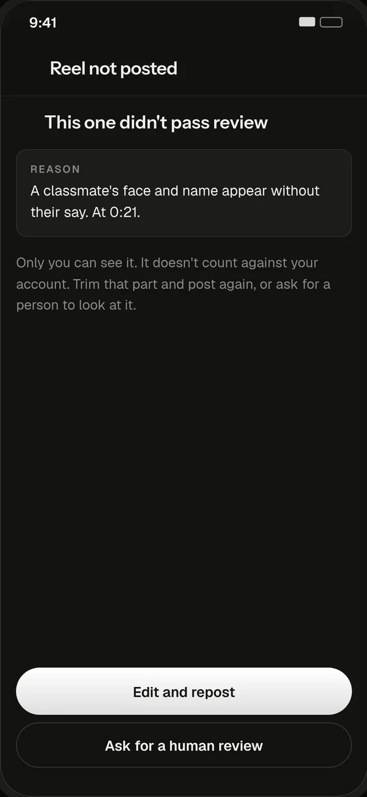
Screens from the interactive WadeScribe prototype, covering the everyday loop: what's next, what changed, the course community, the work that's due and the updates that matter.
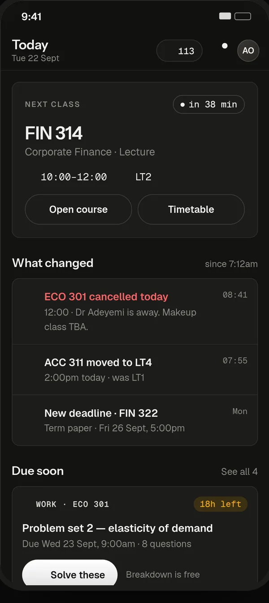
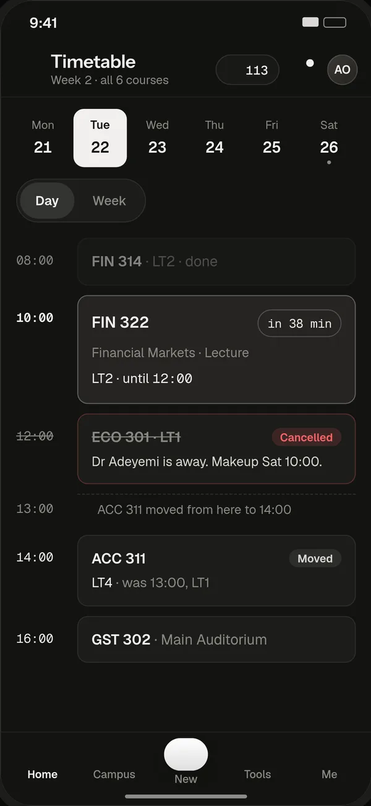
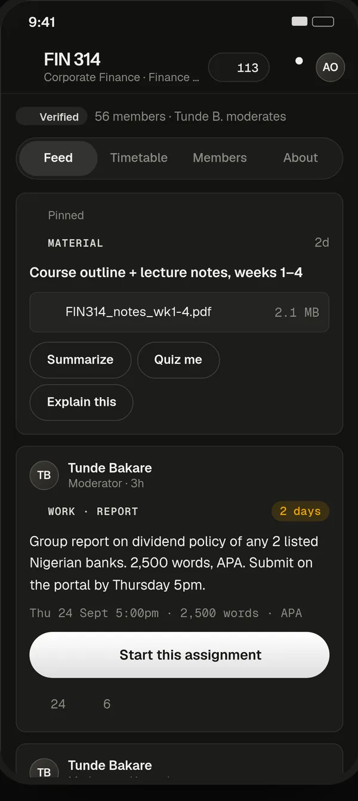
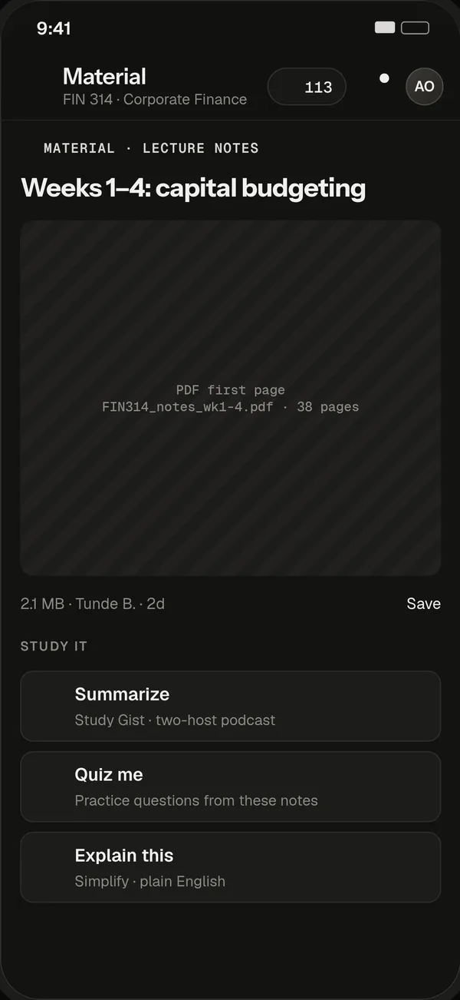
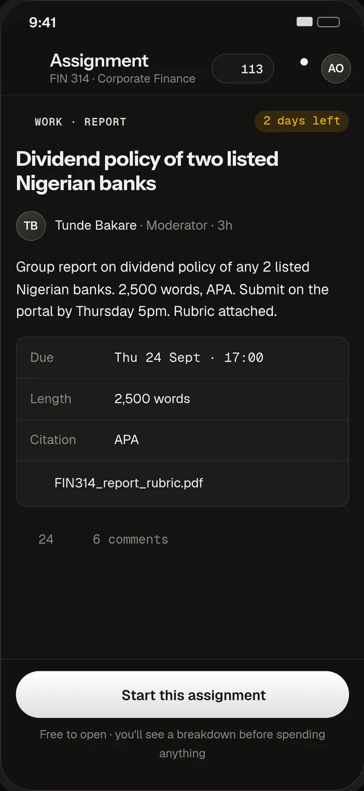
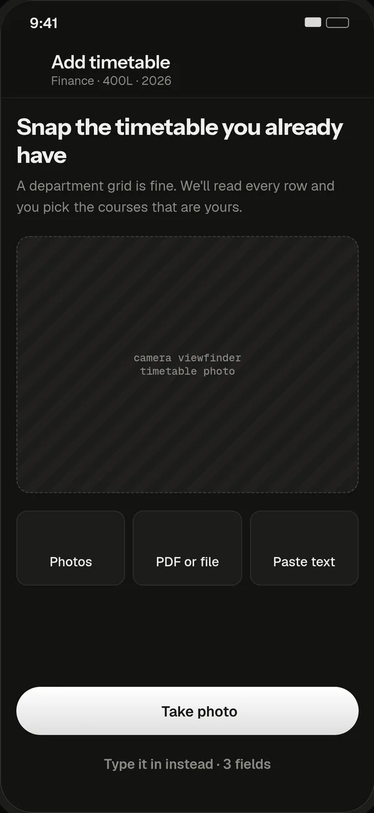
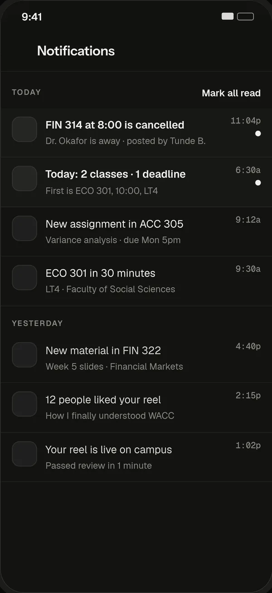
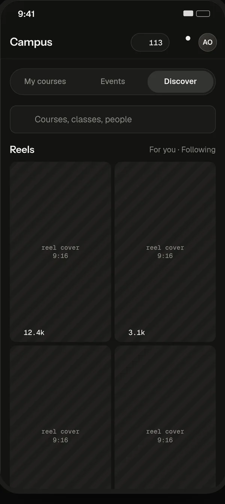
Identify the recurring student tasks, information gaps and moments where communication becomes noisy or easy to miss.
Build the information architecture around courses, timetable, tasks, updates and the student's immediate priorities.
Translate the structure into reusable components, consistent card patterns, responsive layouts and clear states.
Review the flows, edge cases and screen relationships before handing the product direction to development.
The strongest parts of WadeScribe are not necessarily the biggest screens. They are the rules connecting them.
Home, Updates and Class Details can surface the same underlying notification data in different contexts.
The reminder action stays close to the class it belongs to rather than becoming another primary navigation item.
The product's core value is the academic workflow; AI can enhance it without becoming the product's main navigation priority.
Materials should be discoverable from the relevant course instead of forcing students into a disconnected document area.